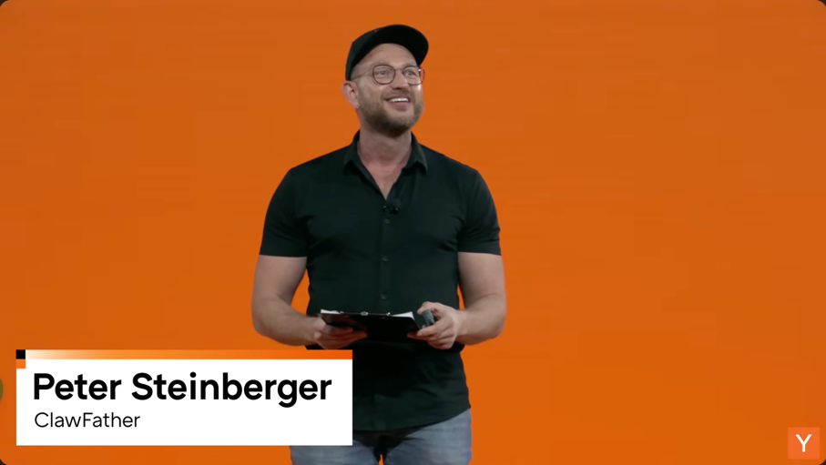

一句话总结：常驻 Agent 的第一道墙不是能力，而是 Token；再往后还有唤醒策略、跨设备执行、隐私控制和资源调度，任何一层没接住，所谓“永远在线”都可能只是永远烧钱。
本章发言来源：Peter（OpenClaw 创建者）。
Peter 最早要解决的不是宏大问题，只是去厨房时不想让电脑上的 coding agent 白等。他让模型做了一个 WhatsApp relay，大约一小时后，手机可以把消息送到 Mac，再把结果带回来。终端里早已能完成同样的问答，感觉却完全不同。
差别来自被藏起来的复杂度。用户不用选择模型、计算上下文长度，也不用判断什么时候新开 session；回答更短，Agent 还会主动来问候。能力没有突然跃迁，入口、语气和持续性却把工具变成了一个似乎“在那里”的对象。
朋友群聊进一步验证了这种变化。有人惊喜，有人害怕，非技术朋友被拒绝使用后会生气。Agent 产品的第一场竞争未必是谁的 benchmark 更高，而是谁能让复杂能力进入已经存在的生活动作，又不让用户先读一份部署手册。
本章要点：Agent 的可感知价值来自能力与入口的组合；降低交互摩擦，往往比再加一个模型选项更重要。
本章发言来源：Peter（OpenClaw 创建者）。
Peter 对 OpenClaw 的定位很直接：每家实验室都会卖自己的 Agent，OpenClaw 要做那个开放的替代品。它希望在不同机器运行、支持不同模型；使用本地模型时，数据不必离开设备。他把这套主张归结为用户的 Agent、机器和生活仍属于用户。
开放并不会自动消除依赖。Peter 也承认，harness 曾对某一模型优化过深，上游改变订阅规则时，项目只得到约 24 小时通知。支持多个模型和真正能无痛切换之间，还隔着体验、性格、工具适配和成本。
开放生态真正提供的不是“完全没有平台”，而是退出权。用户能否更换模型、迁移数据、保留工作流，决定一个 Agent 是个人基础设施，还是另一个更会聊天的租用入口。开放源码只是起点，迁移是否真的可用才是考题。
本章要点：开放 Agent 的价值在于降低被单一模型和平台锁定的代价，而不是假装依赖已经消失。
本章发言来源：Peter（OpenClaw 创建者），回应现场观众关于持续运行与主动工作的提问。
现场有人问，什么时候能有永久运行、主动工作的 Agent。Peter 的回答不是“等下一代模型”，而是技术上今天就能做，只是大多数订阅撑不了多久。能力已经越过演示门槛，经济性还没越过日常使用门槛。
他早期使用静态 heartbeat 定期唤醒 Agent，问题很快出现。一个大型 session 在缓存清除后重新检查，可能把 600,000 tokens 再发到服务器，只为了完成一次没有多少价值的确认。Agent 确实醒了，账单也醒得很彻底。
真正的主动性需要判断何时不行动。系统要先压缩状态、识别变化、估算任务价值，再决定是否恢复完整上下文。定时器只能保证 Agent 活着，不能保证它清醒；如果每次心跳都从头回忆人生，常驻只会成为一种昂贵的失忆。
本章要点：常驻 Agent 的第一道墙不是能力，而是 Token；唤醒策略必须让“不做事”也成为有效决策。
本章发言来源：Peter（OpenClaw 创建者）。
Peter 认为文本界面的阶段正在过去，语音与多模态会让 Agent 更自然地进入生活。他提到团队刚做出一个实验，让 OpenClaw 可以通过 FaceTime 联系用户。这个画面很像产品愿景，也像权限审查员突然多了一份夜班。
当 Agent 只在终端里，它接触的是命令和文件；当它能打电话、看屏幕、操作桌面，它接触的是人正在做的事情。便利来自上下文更完整，风险也来自同一件事。身份、授权、打扰边界和误操作不能等功能成熟后再补。
Peter 还描述团队共享 session 的方向：成员能看见彼此的 Agent 在做什么，另一个 Agent 了解全局并接手编排。协作由“人同步给人”变成“Agent 同步给 Agent”，前提是每个人都知道谁看得到什么、谁有权接管。
本章要点：多模态和团队编排扩大 Agent 的作用范围，也要求权限、可见性与接管规则同步升级。
本章发言来源：Peter（OpenClaw 创建者），回应现场观众关于基础设施瓶颈和希望有人构建什么产品的提问。
Web 任务可以较容易地创建云端 session，涉及 macOS、桌面交互或本机文件时，Peter 说大多数工具就会失败。他仍用屏幕共享进入其他电脑分散负载，让 Agent 拥有独立机器，避免自己和它争夺鼠标。
演讲临近收尾时，有人问他希望别人做什么产品。Peter 想要一个适用于 Mac、也能覆盖 Windows、速度快且价格合理的测试盒。Linux 环境容易获得，桌面系统却仍很麻烦。这不是最会制造发布会掌声的方向，却会决定 Agent 能否真正替开发者跑完任务。
机会因此落在一批很“硬且无聊”的问题上：环境启动、状态迁移、设备权限、资源隔离、失败重试和 fleet 调度。模型负责思考，基础设施负责让思考有地方发生。后一层不稳定，前一层越聪明，失败时越有创造力。
本章要点：Agent 规模化需要可租用、可迁移、可控制的真实执行环境；跨设备基础设施仍是明显缺口。
常驻 Agent 已经不只是科幻命题，但“能运行”离“值得一直运行”还很远。真正可用的系统必须同时回答四个问题：何时醒来，花多少 Token，在哪台机器执行，以及用户能否随时撤回权限和更换模型。少一个，未来就会从助手滑向负担。
Heartbeat：系统定期唤醒 Agent 检查状态或触发工作的机制。固定频率容易造成无效调用和上下文重复传输。
KV cache：模型推理中复用既有上下文计算结果的缓存。缓存失效后，长上下文可能需要重新处理并产生额外成本。
开放权重模型：模型权重可被获取并在自有环境运行的模型。它有助于本地控制，但仍需要硬件、部署和安全能力。
退出权：用户离开某个供应商时，能否带走数据、工作流和模型选择，而不让既有系统失效。
测试盒：为软件测试临时提供的隔离机器或环境，尤其用于需要特定操作系统和桌面交互的任务。
| 数字 | 演讲中的含义 | 回听 |
|---|---|---|
| 约 1 小时 | WhatsApp relay 首个可用版本的构建时间 | [00:02:46–00:03:14] |
| 约 24 小时 | 上游订阅策略变化前给出的通知 | [00:18:09–00:18:23] |
| 10 人 | 演讲时基金会口述的领薪团队规模 | [00:23:59–00:24:05] |
| 33,000 | Peter 口述的 claw 命名仓库数量 | [00:24:09–00:24:24] |
| 600,000 tokens | 大型 session 在缓存清除后一次 heartbeat 可能重发的上下文 | [00:38:10–00:38:34] |
| 问题 | 张力 |
|---|---|
| 开放源码是否等于摆脱依赖 | 用户获得迁移与本地运行可能；模型体验和上游规则仍会形成依赖。 |
| 常驻是否等于主动 | 定时唤醒保证持续运行；不能保证行动有价值或成本合理。 |
| 多模态是否只增加便利 | 语音、屏幕和桌面操作改善交互；也扩大权限和隐私边界。 |
| 更强模型是否会自动解决 Agent 问题 | 模型能力持续提高；执行环境、资源调度和跨设备状态仍需工程系统。 |
本文基于 Whisper turbo 英文转录。FaceTime、团队 session、常驻 Agent 等均按 Peter 的实验或方向性表述处理，不代表已普遍交付；产品名称的 Open Clouds/open clock/clause 等词形疑似误识别，以原音频为准。